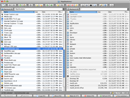
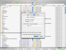
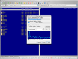
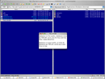
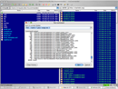
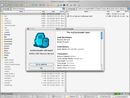

Clean window
(Mac OS X - Striped) Clean window
(Mac OS X - Striped) |  Image viewer over SFTP
(Mac OS X - ClassicCommander)
(Mac OS X - ClassicCommander) | Connect to server
(Mac OS X - ClassicCommander) Connect to server
(Mac OS X - ClassicCommander) |
|
FTP to local copy
(Mac OS X - RetroCommander) FTP to local copy
(Mac OS X - RetroCommander) | Text file viewer in Zip/FTP
(Mac OS X - RetroCommander) Text file viewer in Zip/FTP
(Mac OS X - RetroCommander) |  Preferences dialog - Chinese
(Mac OS X - ClassicCommander)
(Mac OS X - ClassicCommander) |
|
 Edit bookmarks dialog
(Windows 2000 - Native Metal)
(Windows 2000 - Native Metal) |  Edit credentials dialog
(Mac OS X - ClassicCommander)
(Mac OS X - ClassicCommander) | Run command dialog
(Mac OS X - RetroCommander) Run command dialog
(Mac OS X - RetroCommander) |
|
 Minimalist window
(Mac OS X - ClassicCommander)
(Mac OS X - ClassicCommander) |  Authentication dialog
(Windows 2000 - Native)
(Windows 2000 - Native) | About dialog
(Mac OS X - ClassicCommander) About dialog
(Mac OS X - ClassicCommander) |


{kind=link}
{kind=link}
{kind=link}
{kind=link}
{kind=link}
{kind=link}